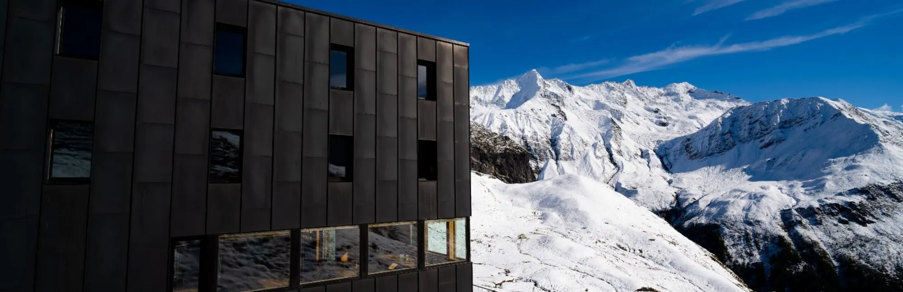
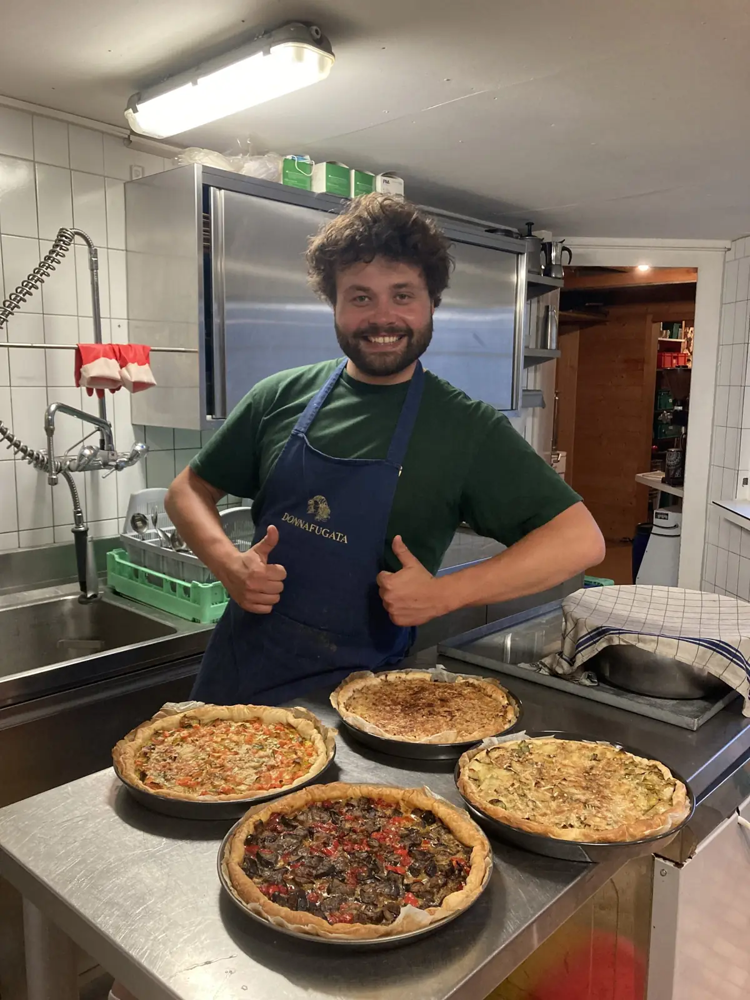
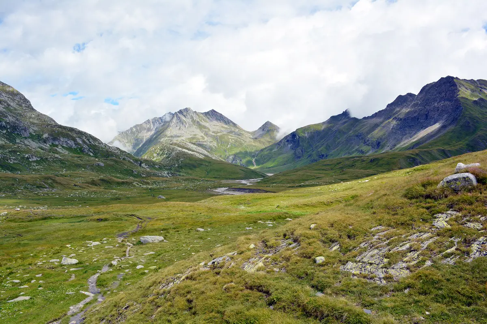
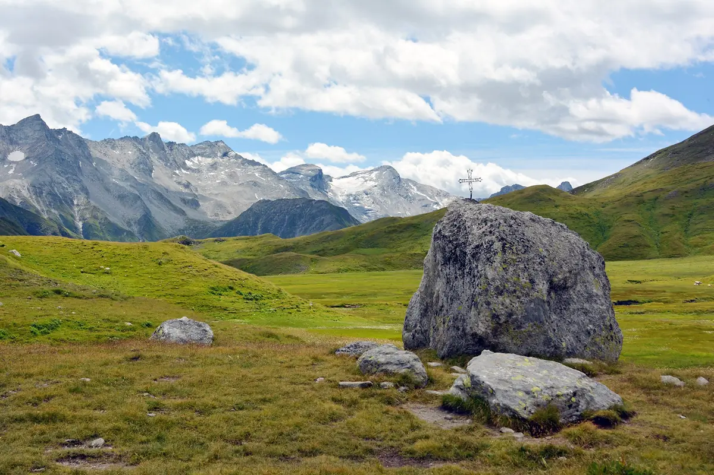
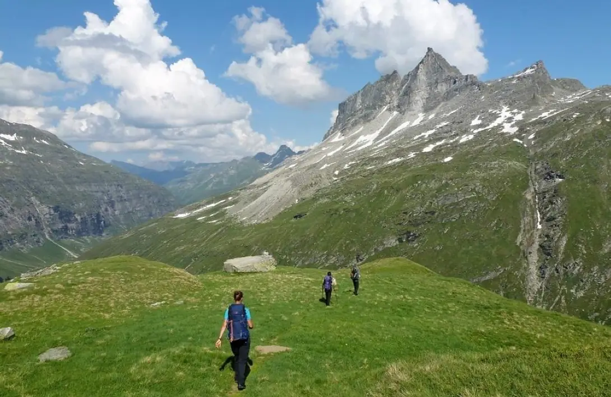

Motterascio
Alpe Motterascio, Greina, Blenio
- Altitudine
- 2172 m
- Posti letto
- 70
- Custodia
- da metà giugno a metà ottobre

La capanna
Inaugurata nel 1967 e ampliata nel 1980, nel 1990 e nel 2006, sorge al margine di una riserva naturale straordinaria: la Greina, con le sue paludi, torbiere, alpeggi e una flora incontaminata. Punto di partenza per itinerari interessanti, tra cui spicca l’arco della Greina, il più grande arco naturale del Canton Ticino.
Al centro di una costellazione di sentieri tra alcuni dei luoghi più belli della Svizzera meridionale, la Capanna Michela Motterascio sorge a 2172 m sull’Alpe Motterascio, al margine sud dell’altopiano della Greina, in un’armonia di legno, rame e sasso. Sotto i pizzi Terri, Coroi, Vial, Gaglianera e Valdraus si passano giornate tra passeggiate, silenzi e relax. Non serve essere alpinisti esperti: bastano curiosità, passione e un po’ di energia.
La capanna è ampia: 70 posti letto con piumoni, un refettorio panoramico da 55 posti con vetrata sulle Alpi, un refettorio «romantico» da 20, servizi interni separati per donne e uomini, doccia quando l’acqua di sorgente basta, locale essiccatoio e ciabatte all’ingresso, anche per i più piccoli. L’acqua è di sorgente, potabile; l’elettricità viene dal fotovoltaico, con un generatore di riserva. Il sacco lenzuolo è obbligatorio, anche a noleggio. Non c’è ricezione telefonica.
Locale invernale: 10 posti letto con piumoni, bevande, legna e beni di prima necessità (sale, zucchero, caffè in polvere). Il cibo va portato; l’acqua non è garantita (fontana sulla terrazza, se non è ghiacciata) e non c’è WC invernale. La riservazione è obbligatoria, online; la conferma contiene tutte le informazioni.
Soggiorno
- Apertura
- Tutto l’anno
- Custodia
- Da metà giugno a metà ottobre (nel 2026 dal 13 giugno al 10 ottobre); d’inverno il locale invernale da 10 posti, su riservazione
- Posti letto
- 70
- Pasti
- Pasti caldi preparati dai guardiani tutto il giorno
- Bibite
- Disponibili anche in assenza del guardiano
Arrivare
- Cartina
- CNS 1233 Greina, coordinate 720.075 / 161.425
La cucina
A pranzo la terrazza al sole e il bel refettorio invitano a gustare piatti semplici e locali, caldi e freddi, con un panorama mozzafiato, e il buffet delle torte fatte in casa. La cena è alle 19.00, con piatti secondo la disponibilità e l’estro dello chef; poi una ricca colazione per ripartire. Si cucina soprattutto con la stufa a legna e i fornelli a gas.
Importante: avvisateci in tempo se siete vegetariani o vegani, o se avete allergie o intolleranze.
Per i bambini ci sono giochi, libri, carta e matite; lungo il sentiero, con un po’ di fortuna, si vedono le marmotte. I cani sono benvenuti ma non entrano in capanna: per la notte c’è la legnaia, riparata e asciutta, con coperta e ciotole. Avvisateci prima.
D’estate la teleferica aiuta i rifornimenti, ma l’elicottero resta indispensabile: vi chiediamo di riportare a valle i vostri rifiuti.
Il guardiano

Mi chiamo Fabio Merzaghi e sono cresciuto ai piedi del Monte Generoso, sulle rive del Lago di Lugano. La montagna è sempre stata la mia passione: d’inverno salgo le vette con le pelli di foca, d’estate arrampico.
Lavorare in un rifugio era il mio sogno: l’ho realizzato nell’estate 2023 alla Capanna del Forno, e poi gestendo per un periodo la Baltschiederklause, a 2783 m in Vallese. Ho seguito il corso per guardiani del Club Alpino Svizzero. Ingegnere meccanico di formazione, ho lasciato l’ufficio per un’avventura a contatto con la natura.
La capanna si basa su prodotti locali di qualità e su pratiche sostenibili. E senza le mani magiche dei nostri fedelissimi aiutanti non ci sarebbe nemmeno una fetta di torta: grazie di cuore!
Fabio
Tariffe e prenotazioni
PrenotaSoci CAS/FAT e club con diritto di reciprocità
Stagione 2026: pernottamento, cena (zuppa, insalata, piatto forte, dessert) e buffet di colazione, IVA e tassa di soggiorno incluse
- Bambini fino a 7 anni
- Fr. 30.–
- Ragazzi da 8 a 14 anni
- Fr. 50.–
- Giovani da 15 a 21 anni
- Fr. 65.–
- Adulti dai 22 anni
- Fr. 82.–
- Guide alpine
- Fr. 52.–
Non soci
Stagione 2026: pernottamento, cena e buffet di colazione, IVA e tassa di soggiorno incluse
- Bambini fino a 7 anni
- Fr. 32.–
- Ragazzi da 8 a 14 anni
- Fr. 55.–
- Giovani da 15 a 21 anni
- Fr. 72.–
- Adulti dai 22 anni
- Fr. 95.–
Famiglie e gruppi
Sconto infrasettimanale per famiglie (domenica-giovedì) e prezzi per scuole, scout e G+S (lunedì-giovedì)
- Famiglie: riduzione per ogni bambino sotto i 15 anni
- Fr. 5.–
- Gruppi: ragazzi da 8 a 14 anni
- Fr. 40.–
- Gruppi: giovani da 15 a 18 anni
- Fr. 50.–
Extra
Per ragioni igieniche il sacco lenzuolo è obbligatorio
- Lunch
- Fr. 10.–
- Tè (1 l)
- Fr. 3.–
- Doccia (a persona)
- Fr. 5.–
- Sacco lenzuolo monouso
- Fr. 7.–
- Sacco lenzuolo a noleggio
- Fr. 5.–
- Riservazione online con il pulsante «Prenota»; per l’ultimo momento telefonate.
- Pagamento solo in contanti, in franchi o in euro.
- Annullamenti e modifiche gratuiti entro le 18.00 di due giorni prima dell’arrivo; entro le 18.00 del giorno prima Fr. 30.– per persona e notte; mancato arrivo non annunciato Fr. 50.– per persona e notte.
Come arrivare
D’estate la capanna si raggiunge facilmente a piedi, per lo più su itinerari adatti alle famiglie. D’inverno si sale con gli sci per la Val Camadra e il Passo della Greina (5-6 h), solo con neve assestata e quando i pendii laterali si sono scaricati.
- Dal Lago di Luzzone, Alpe Garzott: 2 h.
- Dal Lago di Luzzone, diga: 3 h 30.
- Da Ghirone per il Lago di Luzzone: 4 h 30; per la Val Camadra: 6 h.
- Da Pian Geirètt: 3 h 30.
- Da Vrin: 5 h; da Vals: 7-8 h.
Con i mezzi pubblici: treno e bus fino a Ghirone, Aquilesco; poi il bus alpino delle Autolinee Bleniesi fino al Lago di Luzzone o a Pian Geirètt, ogni giorno in luglio e agosto, solo nei fine settimana in settembre.
In auto: A2 fino a Biasca, poi direzione Lucomagno fino a Campo Blenio e Ghirone; si sale alla diga del Luzzone e si costeggia il lago fino all’Alpe Garzott. Posteggi gratuiti a Ghirone-Aquilesco e alla diga (con servizi igienici; ristorante Luzzone da aprile a ottobre); all’Alpe Garzott, dove si compra un ottimo formaggio, i posti sono pochi: arrivate presto o condividete l’auto.
Taxi: Poglia Mirko (Olivone) +41 79 444 07 12; Taxi Riviera (Biasca) +41 79 413 68 68.
Traversate ad altre capanne: Terri 2 h 30; Scaletta 2 h; Bovarina 5 h; Adula CAS 5 h; Adula UTOE 6 h; Medels 6 h; Länta 7 h; Rifugio Scaradra 3 h. Itinerari su SvizzeraMobile.
Cartine: CNS 1:25’000 foglio 1233 Greina; carta scialpinistica 256 S.
Attività
La Greina è un altopiano unico tra Ticino e Grigioni, lungo quasi 6 km a oltre 2200 m: una tundra alpina protetta, iscritta nell’inventario federale dei paesaggi d’importanza nazionale. È intatta: gli unici segni dell’uomo sono il Crap la Crusch e il Pass Crap, dove una croce di ferro ricorda che già in epoca romana e nel Medioevo era via di transito e di pascolo.
Qui nascono innumerevoli sorgenti che formano meandri, lanche e paludi, sullo spartiacque continentale: il Brenno della Greina va verso il Mediterraneo, il Rein da Sumvitg verso il Mare del Nord. È la regina dei contrasti, tra il bianco dei ghiacciai, il nero degli scisti e il verde della tundra, con l’arco naturale di pietra di una quarantina di metri, le torbiere, i pinnacoli e le doline. Per viverne davvero l’incanto, fermatevi due giorni o più.

Il giro della Greina
La Greina in un giorno: dal Luzzone alla capanna, al Passo della Greina e giù alla Scaletta, con il bus alpino.

Proposte di gite
Sei gite dalla capanna: il Crap la Crusch, il Piz Terri, l’arco della Greina, il Plaun la Greina e la Via Crio.

Trekking Greina Alta
Da Curaglia a Vals in quattro tappe: tre capanne del CAS, tre culture, tre lingue.
Dalla capanna
Le ultime notizie della capanna, pubblicate dai guardiani su Facebook.
Apri la pagina FacebookI post vengono caricati da Facebook solo dopo il clic: da quel momento Facebook riceve dati sulla tua visita.
Senti il guardiano prima di partire
Verifica sempre la presenza del guardiano e le condizioni della montagna.
- Guardiano
- Fabio Merzaghi
- Prenotazioni
- +41 91 872 16 22 (da metà giugno a metà ottobre)
- Cellulare
- +41 79 727 69 05
- motterascio@casticino.ch
Sostieni la capanna
Manutenzione, rinnovi e lavori costano: le capanne vivono anche grazie ai soci e agli amici della montagna. Puoi sostenerle con una donazione sul conto della sezione, indicando il nome della capanna.
- Conto
- Banca Stato, Lugano
IBAN CH09 0076 4128 9526 1200 6 - Causale
- Capanna Motterascio